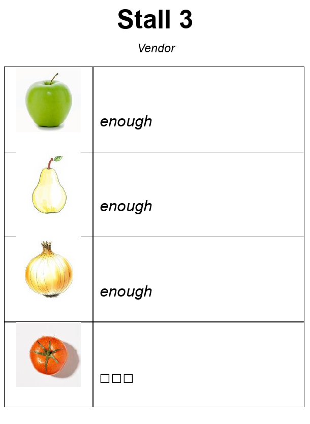

Data Analyst • Research Methodology • Language Assessment and Teaching
Simulating information gap activities
Information gap activities are a popular kind of class activity because they put students into semi-authentic communicative situations: they have to solve a task that they might also face outside the classroom. Information gap activities are often done in pairs, but it is more fun, and gives more speaking practice, if the information is distributed among the whole class. Students then talk to many classmates, and there is a competitive element: everyone wants to finish first. For the teacher this creates a challenge. Every student gets a different task card, so the activity only works if everyone can find all the information they need from their classmates; otherwise someone is stuck. Trying this out in class costs lesson time, and class size changes from day to day. Instead, the activity can be simulated on the computer: virtual students play it thousands of times for different class sizes. The simulation shows whether everyone can finish and how many interactions are needed, on average and in a bad case.
Everyone is a new courier at Blitzbote, a bicycle delivery service, on their first day. Each courier has four packages to deliver in a fixed order, for example from the station to the theatre, then from the theatre to the museum. But the internet is down, so the couriers cannot use a navigation app and have to ask people in the street. Each courier has a printed street map, but only six houses carry their names; the other houses are blank, and the courier writes in the name once they have found the place.
To find a place, students ask a classmate: “How do I get from the station to the theatre?” Only someone whose map shows both places can answer, using only left, right and straight on: “Go left, then straight on, then right.” Someone who doesn’t have both places says “I don’t know, I’m sorry.” Because each package starts where the last one ended, the steps have to be asked in order. Information passes only by speaking, so the cards stay hidden. The first courier to deliver all four packages wins.
Language goal: asking for and giving directions, places in the city
What the simulation checks. The game needs at least 5 players to work. With fewer, there are not enough different maps to cover every step of every route. For each additional player (6, 7, and so forth), the simulation checks again whether a solution exists: every step of every route must be answerable by at least one other player, so that no courier gets stuck. It also counts how many players can answer each step, because too many helpers make the task too easy and too fast. A second check walks every route on the map to make sure the directions lead to the right place. Finally, the simulation estimates how long it takes until everyone has delivered all four packages, based on assumed durations for asking and answering, not on measurements.

It is the day of the town’s cooking contest. Some participants are cooks, and the others are vendors at the market. Each cook has three recipe cards, for example fruit salad, tomato soup and smoothie. The ingredients have to come from the market, where the vendors sit at their stalls. Nobody knows what each stall sells, so the cooks walk from stall to stall and ask: “Do you have mangos?” Common products such as potatoes, apples and bananas never run out, but at the end of the season some products (kiwis, mangos, melons, tomatoes and strawberries) are in short supply. Once they are sold out, they are gone. The recipes with few ingredients are the ones that use these rare products: they can be finished quickly, but they may also never be finished if a product runs out. The recipes with many ingredients use only common products, so they take longer but can always be finished.
The rules are simple: only one product per visit, in any quantity, then go to another stall. Vendors stay seated and keep their stock cards hidden. The boxes on the cards are for counting: on a stall card, the boxes show the vendor’s stock, and the vendor ticks off one box for every piece sold (products without boxes never run out). On a cook’s card, the boxes show how many pieces of each ingredient the recipe needs, and the cook ticks off a box for every piece bought. A cook who has all the ingredients for a recipe can start the next one. The cook who has cooked the most dishes when time is up wins.
The catch is deciding when to give up on a recipe. A “no” only tells a cook something about one stall, because most products are sold at two or three stalls. Cooks can switch to another recipe at any time and keep what they have bought. But a cook who keeps asking for a product that is sold out everywhere wastes the whole round, while a cook who switches too early may give up a recipe that was still possible. The vendors’ answers help: “No, I’m out” means the product was here and is gone, while a plain “no, I’m sorry” means this stall does not sell it. Cooks have to decide how many “sold out” answers are enough before they switch.
Language goal: shopping at a market, fruit and vegetables, quantities and plural forms
What the simulation checks. Whether the task is solvable: the stock of each rare product is compared with the demand if everybody cooked all recipes, which shows that no class can cook everything and that scarcity is part of the design. Cooks are simulated for different class sizes and numbers of visits. Telling the cooks where products are (a list on the board) instead of letting them ask at random changes how many dishes each cook can make and how many cooks end up without any dish. These results come from a simple model with cooperative students and are meant for comparing designs, not as forecasts.
Try the simulation
Three cooks, each with a different task card (K02, K05 and K11 from the real set), shop at the market. Set how much of each product is available, then watch who finishes which recipes. Each step is one cook visiting one stall and asking for products there.
1. Choose a scenario
The number shows what is left at the market. Products without a limit never run out.
2. The cooks
3. Run it
4. Run it 1,000 times
With the supply and settings above, the computer lets the three cooks shop 1,000 times, in a different random order each time.
Model: every product has one common pool, a cook asks for one product at a time and does not know what a stall sells. After a “no” the cook keeps asking at the same stall for other products (switch this off above); after a “yes” the visit is over, because only one product can be bought per visit. The stalls are the eight stalls of the real game. Memory is how likely a cook is to remember an answer: none (never), some (half of the answers), good (every answer). A cook who remembers goes to a stall that sells the product and does not ask again where the answer was “no”. Cooks always work on the recipe that is missing the fewest products.
The activity. All students are guests in the same hotel. Everyone forgot to bring a few things but luckily the classmates have what they need, they only need to ask the right person. Every guest needs three things (for example a hair dryer, a towel, a phone charger) and has four spare things that other guests need. Students ask each other: "I need a hair dryer. Do you have a hair dryer?" – If the other student has the item on their list, they cross it out and say “Here you go.” The borrower writes down the name of the lender so they know who to return the item to. Every item can be lent only once. When a student has three names, they sit down and report who has what.
Language goal: asking to borrow things, the verbs “to have” and “to need” with the accusative case
What the simulation checks. For a given class size, every item that somebody needs has to be on the "spare" list of at least two other students present, and there are always at least as many spare items as needed items. A simulated mingle with random partners checks how many interactions are needed on average and if everyone can finish.